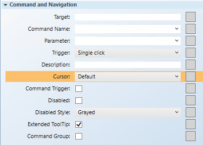

Configure the Group Command and Navigation Properties
Scenario: You want to change the units of an Analog Input point, by selecting a value from a dropdown control, and then clicking Send.

NOTE:
If you create a command control element in a symbol instead of on a graphic, follow the steps below, replacing the target and any other hard-coded references with * substitutions in the Evaluation Editor. For more information, see Symbol Property Substitutions.
- You have reviewed the properties in the Command and Navigation Properties group and have a full understanding of the fields and the options available to you for configuring the Command and Navigation properties.
- You have drawn a dropdown control and a Send button (Text element), configured their Command and Navigation properties, and grouped them.
- Select the Group control on the canvas, and from the Property view (Group Properties) expand the Command and Navigation properties group.

- In the Target field, drag the data point from System Browser that is the object receiving the command. If the target’s designation path does not specify a property, the default property is targeted. You can also specify the property by typing the [.Property_Name] after dragging the data point into the Target field.
- For this example, drag the Analog Input data point and at the end of the path, type
.Units. The Target path should display xSystem1.ManagementView.[custom path].AI_1;.Units.
NOTE: If you have the data point selected in System Browser, or you have selected a symbol instance of the data point on the canvas, the data point information is displayed in the Extended Operations tab, from there, drag the property you want to target into the Target field. The property name is added automatically. - From the Command Name drop-down menu, select or type the command name that you want applied to the property. The command name must match the name of the command in the Models and Functions Command Configuration section. This field is case-sensitive.
- For this example, type Write.
- In the Parameter field, do one of the following:
- Select the value from the drop-down menu.
NOTE: For a stand-alone command control, if you have multiple parameters, only one parameter receives the value from the control itself and all other parameter values must be hard-coded. - For this example, delete everything but the parameter name, which in this case is: Value.
- You have already configured the trigger for the Group command in the Send (Text element) button Command and Navigation properties section. Leave this field as is.
- (Optional) In the Description field, type a brief description of the command that will appear in the tooltip.
- From the Cursor drop-down menu, leave the default, as this field is not configured for the Group.
NOTE: In a Group command control, the children receive the cursor configuration only. - Ensure the Command Trigger check box is not selected.
- The Extended Tooltip check box is selected by default. It displays the following command object details: Target, Command Name, and Parameter. If enabled, the extended tooltip is added to any existing tooltips configured for the element.
- Select the Command Group check box.
- Click Save As
 .
.
If you created a symbol and you want to designate it as the default command symbol for an object type proceed to Designating and Adding a Default Command Symbol to a Graphic.